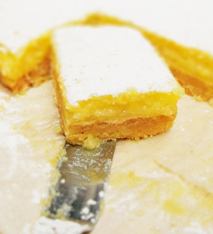

The Best Lemon Bars

Tart, rich and perfection, all rolled into one! Wow your friends with
this simple recipe. Hint: No Substitutions!
Ingredients
- 1 cup butter, softened
- 1/2 cup white sugar
- 2 cups all-purpose flour
- 4 eggs
- 1 1/2 cups white sugar
- 1/4 cup all-purpose flour
- 2 lemons, juiced
Steps
-
Preheat oven to 350 degrees F (175 degrees C).
-
In a medium bowl, blend together softened butter, 2 cups flour and
1/2 cup sugar. Press into the bottom of an ungreased 9x13 inch pan.
-
Bake for 15 to 20 minutes in the preheated oven, or until firm and
golden. In another bowl, whisk together the remaining 1 1/2 cups
sugar and 1/4 cup flour. Whisk in the eggs and lemon juice. Pour
over the baked crust.
-
Bake for an additional 20 minutes in the preheated oven. The bars
will firm up as they cool. For a festive tray, make another pan
using limes instead of lemons and adding a drop of green food
coloring to give a very pale green. After both pans have cooled,
cut into uniform 2 inch squares and arrange in a checker board
fashion.
Back to the main page